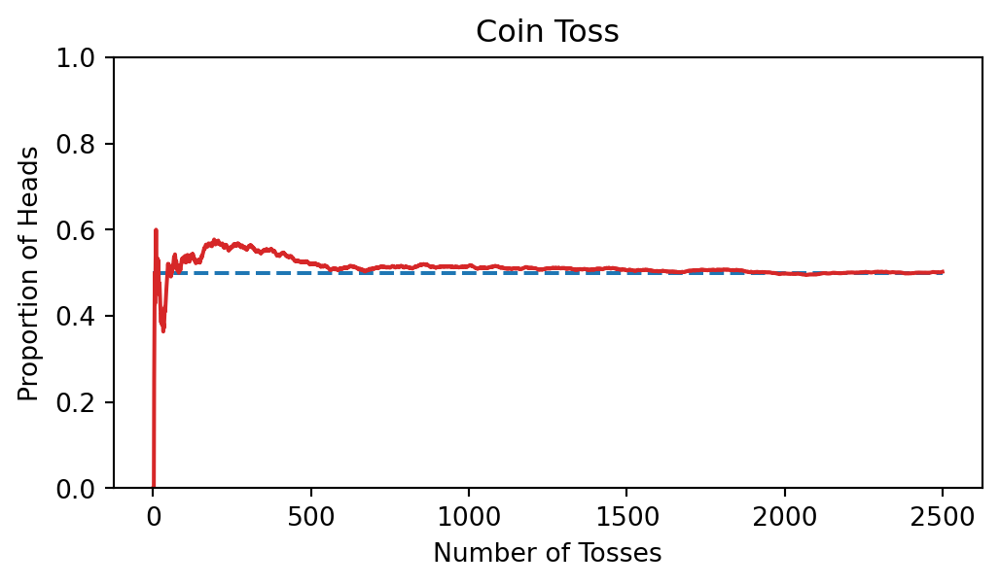
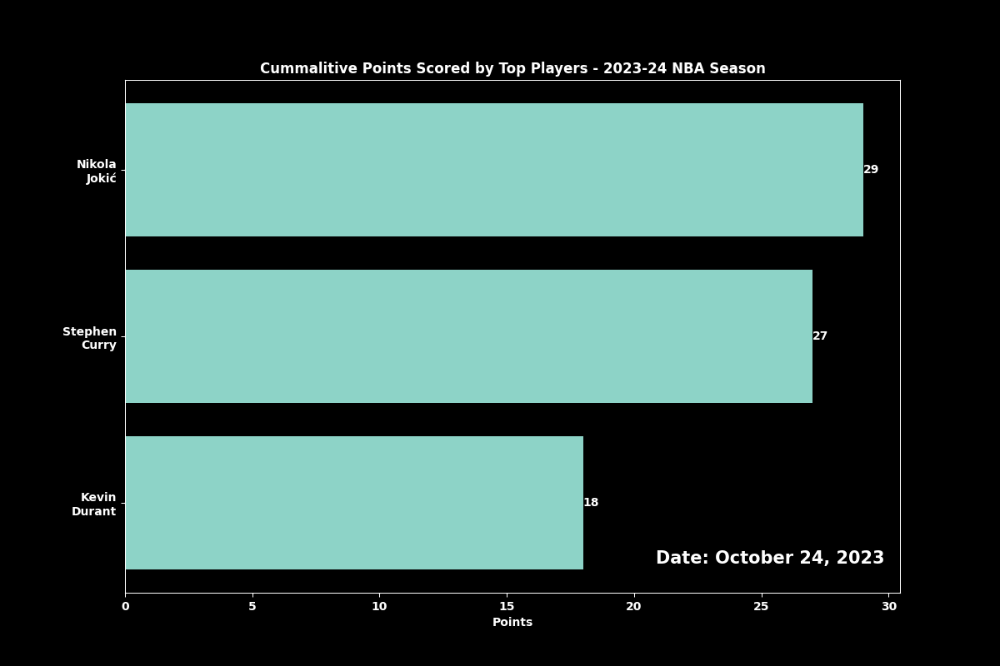

Animating plots is also possible with matplotlib. Animated maps and plots are valuable for showing changes over time or across locations, making trends and patterns easier to see. They’re useful in fields like public health, where animated maps can show how a disease spreads, or in economics, where plots can track market trends. Environmental scientists also use animated weather maps to illustrate seasonal shifts. These visuals make complex data clearer and help in understanding and decision-making.
Let’s create a line plot to show how the proportion of heads in coin tosses changes as the number of tosses increases.
import randomimport matplotlib.pyplot as pltrandom.seed(3255)def prob_heads(trials): result = [] prop_heads = []for i inrange(trials): toss = random.randint(0,1) result.append(toss) prop_heads.append(sum(result)/len(result)) return prop_headsplt.figure(figsize=(6,3))plt.hlines(0.5,0,2500,linestyles='dashed')plt.plot(prob_heads(2500),color='tab:red')plt.ylim(0,1)plt.title("Coin Toss")plt.ylabel('Proportion of Heads')plt.xlabel('Number of Tosses')plt.show()

10.1.1 Coin Toss Animtion
Using FuncAnimation, we can animate the coin toss plot we previously made.
prop_heads = prob_heads(2500)frames =range(len(prop_heads))fig, ax = plt.subplots(figsize=(12,6))def update(frame):# Clear previous frame ax.clear()# Add title, and labels ax.set_title('Coin Toss') ax.set_ylabel('Proportion of Heads') ax.set_xlabel('Number of Tosses') ax.set_ylim(0,1)# Plot data ax.hlines(0.5,0,frame+1,linestyles='dashed') ax.plot(range(1,frame+1),prop_heads[:frame],color='tab:red')anim = FuncAnimation(fig,update,frames=frames,repeat=False)anim.save('coin_toss.gif',writer='Pillow',fps=50)plt.show()
10.1.2 A Step Further - Coin Toss Animation
We can take this a step further by labeling the current proportion value for each frame.
prop_heads = prob_heads(2500)frames =range(len(prop_heads))fig, ax = plt.subplots(figsize=(12,6))def update(frame): ax.clear() ax.set_title('Coin Toss') ax.set_ylabel('Proportion of Heads') ax.set_xlabel('Number of Tosses') ax.hlines(0.5,0,frame+1,linestyles='dashed') ax.set_ylim(0,1)# Add text ax.text(frame+1,prop_heads[frame]*1.05,f'{prop_heads[frame]:.3f}',weight='bold') ax.plot(range(1,frame+1),prop_heads[:frame],color='tab:red')anim = FuncAnimation(fig,update,frames=frames)plt.show()
10.2 Bar Chart Animation
Let’s animate a bar chart of the cummalitive points scored by the top ten NBA players over the course of a season. Here I am using plt.barh to create a horizontal bar chart.
import pandas as pdfrom nba_api.stats.endpoints import leaguegamelogfrom matplotlib.animation import FuncAnimationimport matplotlib.pyplot as pltplt.style.use('dark_background')# Download all gamesgames = leaguegamelog.LeagueGameLog(season='2023-24', season_type_all_star='Regular Season', timeout=60, player_or_team_abbreviation='P').get_data_frames()[0]# Prepare the datagames['GAME_DATE'] = pd.to_datetime(games['GAME_DATE'])# We want PLAYER_NAME, GAME_DATE, PTSdf = games[['PLAYER_NAME', 'GAME_DATE', 'PTS']]# Step 3: Sort by datedf = df.sort_values('GAME_DATE')# Cumulative points per player over timedf['CUM_PTS'] = df.groupby('PLAYER_NAME')['PTS'].cumsum()# Get top ten playerstop_players = df.groupby('PLAYER_NAME')['PTS'].sum().sort_values( ascending=False).head(10).indexdf = df[df['PLAYER_NAME'].isin(top_players)]plt.rcParams['font.weight'] ='bold'fig, ax = plt.subplots(figsize=(12,8))def func(x): ax.clear() data = df[df['GAME_DATE']<=x] data = data.groupby('PLAYER_NAME') players = data.groups.keys() plot_df = pd.DataFrame(index=players) plot_df['PTS']= [data.get_group(x)['CUM_PTS'].max() for x in players] plot_df = plot_df.sort_values('PTS') names = ['\n'.join(i.split(' ')) for i in plot_df.index.to_list()] hbars = ax.barh(names, plot_df['PTS']) ax.bar_label(hbars,plot_df['PTS']) ax.text(0.98,0.05,f'Date: {x.strftime('%B %d, %Y')}',transform=ax.transAxes, weight='bold',fontsize=15, color='white',ha='right',va='bottom') ax.set_title('Cummalitive Points Scored by Top Players - 2023-24 NBA Season',weight='bold') ax.set_xlabel('Points',weight='bold')anim = FuncAnimation(fig,func,frames=df['GAME_DATE'])anim.save('animation.gif',writer='Pillow',fps=15)

10.3 Saving your Animation
10.3.1 GIF
To save your animation as a GIF:
Writer: Pillow
Command: Use anim.save() with the writer='Pillow' option.